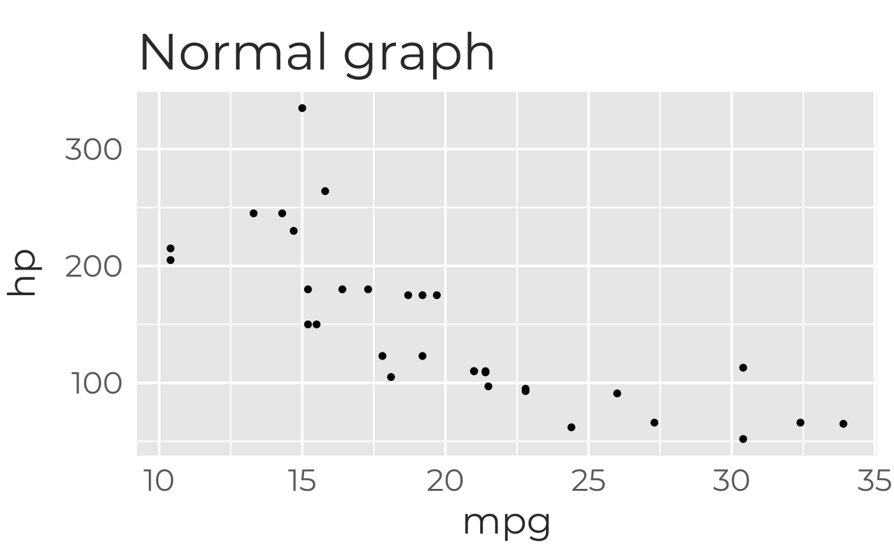
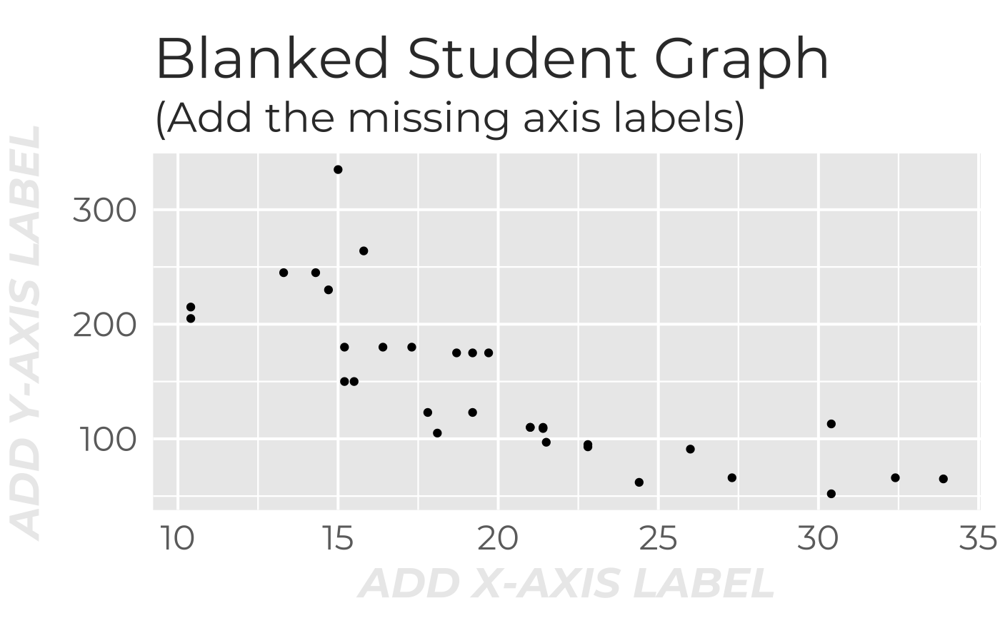

The counterpoint to highlight_labs(). A function to replace axis labels and/or graph title with light gray prompts for each field.
blank_labs(
x_txt = "ADD X-AXIS LABEL",
y_txt = "ADD Y-AXIS LABEL",
xval_txt = NA,
yval_txt = NA,
title_txt = "ADD FIGURE TITLE",
txt_col = "gray92",
font_face = 4,
...
)X-Axis Label prompt text (watermarked on blank); default= "ADD X-AXIS LABEL"; "" will keep spacing, with no text prompt; NA will pass-through label and not overwrite.
Y-Axis Label prompt text (watermarked on blank); default= "ADD Y-AXIS LABEL"; "" will keep spacing, with no text prompt; NA will pass-through label and not overwrite
For geom_boxplot or similar, replace factor labels (x-values) with this text; default=NA; Suggested text="Add LABEL". Needs to be repeated for as many labels as the original graph has
Replace y-axis values with custom text; default=NA; Suggested text="Add LABEL". Needs to be repeated for as many labels as the original graph has
Graph Title prompt text (watermarked on blank); default= "ADD FIGURE TITLE"; "" will keep spacing, with no text prompt; NA will pass-through label and not overwrite
Color of prompt text; default= "gray92" (a very faint gray--you can use gray1 to gray99 to have the equivalent of changing transparency)
style of axis label and title fonts; 1=plain, 2= bold, 3=italic, 4=bold+italic; Provide 1 value for all or 3 values for title, x- and y-axis labels, and x- and y- values (in that order); default= 4
This is used to make student graphs with parts missing to be filled in.
Other functions for enigmatizing graphs:
highlight_labs()
require(ggplot2)
#> Loading required package: ggplot2
(g0 <- ggplot(mtcars,aes(x=mpg,y=hp))+geom_point()+
theme_galactic()+ggtitle("Normal graph") )

# Make student version with x- and y- axis labels blanked, but not title
g0+blank_labs(title_txt=NA)+
labs(title="Blanked Student Graph",subtitle="(Add the missing axis labels)")

# Note this is will not look great until you save the file
ggsave("blank graph.png",width=4,height=3)
# Now make a teacher version of the graph with correct labels highlighted blue
g0+highlight_labs(c(2,3))
#> Error in if (which_lab == 8 | which_lab == "all") { d <- d0} else { keep <- sapply(which_lab, function(x) { if (suppressWarnings(!is.na(as.numeric(x)))) { x } else { d0$n[which(d0$which_lab == x)] } }) %>% unlist() %>% as.numeric() d <- d0[keep, ]}: the condition has length > 1